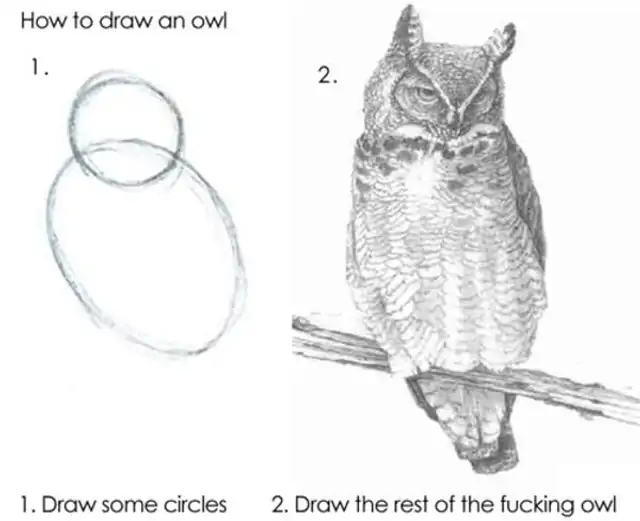
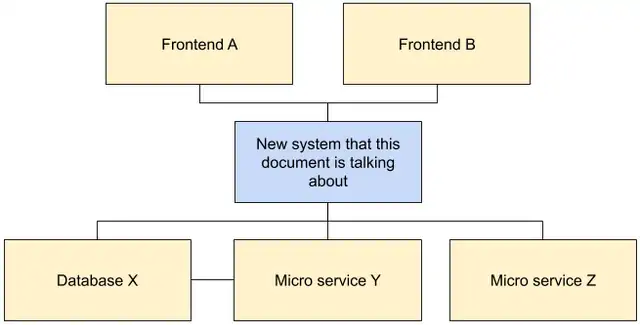

Design docs¶
One of the key elements of Google's software engineering culture is the use of design docs for defining software designs. These are relatively informal documents that the primary author or authors of a software system or application create before they embark on the coding project. The design doc documents the high level implementation strategy and key design decisions with emphasis on the trade-offs that were considered during those decisions.
As software engineers our job is not to produce code per se, but rather to solve problems. Unstructured text, like in the form of a design doc, may be the better tool for solving problems early in a project lifecycle, as it may be more concise and easier to comprehend, and communicates the problems and solutions at a higher level than code.
Besides the original documentation of a software design, design docs fulfill the following functions in the software development lifecycle:
- Early identification of design issues when making changes is still cheap.
- Achieving consensus around a design in the organization.
- Ensuring consideration of cross-cutting concerns.
- Scaling knowledge of senior engineers into the organization.
- Form the basis of an organizational memory around design decisions.
- Acts as a summary artifact in the technical portfolio of the software designer(s).
Anatomy of a design doc¶
Design docs are informal documents and thus don’t follow a strict guideline for their content. Rule #1 is: Write them in whatever form makes the most sense for the particular project.
Having said that, a certain structure has established itself as really useful.
Context and scope¶
This section gives the reader a very rough overview of the landscape in which the new system is being built and what is actually being built. This isn’t a requirements doc. Keep it succinct! The goal is that readers are brought up to speed but some previous knowledge can be assumed and detailed info can be linked to. This section should be entirely focused on objective background facts.
Goals and non-goals¶
A short list of bullet points of what the goals of the system are, and, sometimes more importantly, what non-goals are. Note, that non-goals aren’t negated goals like “The system shouldn’t crash”, but rather things that could reasonably be goals, but are explicitly chosen not to be goals. A good example would be “ACID compliance”; when designing a database, you’d certainly want to know whether that is a goal or non-goal. And if it is a non-goal you might still select a solution that provides it, if it doesn’t introduce trade-offs that prevent achieving the goals.
The actual design¶
This section should start with an overview and then go into details.  Visualization of how to draw an owl. First picture: two circles labeled "1. Draw some circles". Second picture: Picture of an own labeled "2. Draw the rest of the fucking owl"
The design doc is the place to write down the trade-offs you made in designing your software. Focus on those trade-offs to produce a useful document with long-term value. That is, given the context (facts), goals and non-goals (requirements), the design doc is the place to suggest solutions and show why a particular solution best satisfies those goals.
The point of writing a document over a more formal medium is to provide the flexibility to express the problem set at hand in an appropriate manner. Because of this, there is no explicit guidance for how to actually describe the design.
Having said that, a few best practices and repeating topics have emerged that make sense for a large percentage of design docs:
System-context-diagram¶
In many docs a system-context-diagram can be very useful. Such a diagram shows the system as part of the larger technical landscape and allows readers to contextualize the new design given its environment that they are already familiar with.
Block diagram showing how various systems are related to each other. The actual text is just examples and not needed to be seen to understand the example.  Example of a system-context-diagram.
APIs¶
If the system under design exposes an API, then sketching out that API is usually a good idea. In most cases, however, one should withstand the temptation to copy-paste formal interface or data definitions into the doc as these are often verbose, contain unnecessary detail and quickly get out of date. Instead focus on the parts that are relevant to the design and its trade-offs.
Data storage¶
Systems that store data should likely discuss how and in what rough form this happens. Similar to the advice on APIs, and for the same reasons, copy-pasting complete schema definitions should be avoided. Instead focus on the parts that are relevant to the design and its trade-offs.
Code and pseudo-code¶
Design docs should rarely contain code, or pseudo-code except in situations where novel algorithms are described. As appropriate, link to prototypes that show the implementability of the design.
Degree of constraint¶
One of the primary factors that would influence the shape of a software design and hence the design doc, is the degree of constraint of the solution space.
On one end of the extreme is the “greenfield software project”, where all we know are the goals, and the solution can be whatever makes the most sense. Such a document may be wide-ranging, but it also needs to quickly define a set of rules that allow zooming in on a manageable set of solutions.
On the other end are systems where the possible solutions are very well defined, but it isn’t at all obvious how they could even be combined to achieve the goals. This may be a legacy system that is difficult to change and wasn’t designed to do what you want it to do or a library design that needs to operate within the constraints of the host programming language.
In this situation you may be able to enumerate all the things you can do relatively easily, but you need to creatively put those things together to achieve the goals. There may be multiple solutions, and none of them are really great, and hence such a document should focus on selecting the best way given all identified trade-offs.
Alternatives considered¶
This section lists alternative designs that would have reasonably achieved similar outcomes. The focus should be on the trade-offs that each respective design makes and how those trade-offs led to the decision to select the design that is the primary topic of the document.
While it is fine to be succinct about solution that ended up not being selected, this section is one of the most important ones as it shows very explicitly why the selected solution is the best given the project goals and how other solutions, that the reader may be wondering about, introduce trade-offs that are less desirable given the goals.
Cross-cutting concerns¶
This is where your organization can ensure that certain cross-cutting concerns such as security, privacy, and observability are always taken into consideration. These are often relatively short sections that explain how the design impacts the concern and how the concern is addressed. Teams should standardize what these concerns are in their case.
Due to their importance, Google projects are required to have a dedicated privacy design doc, and there are dedicated reviews for privacy and security. While the reviews are only required to be completed by the time a project launches, it is best practice to engage with privacy and security teams as early as possible to ensure that designs take them into account from the ground up. In case of dedicated docs for these topics, the central design doc can, of course, reference them instead of going into detail.
The length of a design doc¶
Design docs should be sufficiently detailed but short enough to actually be read by busy people. The sweet spot for a larger project seems to be around 10-20ish pages. If you get way beyond that, it might make sense to split up the problem into more manageable sub problems. It should also be noted that it is absolutely possible to write a 1-3 page “mini design doc”. This is especially helpful for incremental improvements or sub tasks in an agile project–you still do all the same steps as for a longer doc, just keep things more terse and focused on a limited problem set.
When not to write a design doc¶
Writing design docs is overhead. The decision whether to write a design doc comes down to the core trade-off of deciding whether the benefits in organizational consensus around design, documentation, senior review, etc. outweigh the extra work of creating the doc. At the center of that decision lies whether the solution to the design problem is ambiguous–because of problem complexity or solution complexity, or both. If it is not, then there is little value in going through the process of writing a doc.
A clear indicator that a doc might not be necessary are design docs that are really implementation manuals. If a doc basically says “This is how we are going to implement it” without going into trade-offs, alternatives, and explaining decision making (or if the solution is so obvious as to mean there were no trade-offs), then it would probably have been a better idea to write the actual program right away.
Finally, the overhead of creating and reviewing a design doc may not be compatible with prototyping and rapid iteration. However, most software projects do have a set of actually known problems. Subscribing to agile methodologies is not an excuse for not taking the time to get solutions to actually known problems right. Additionally, prototyping itself may be part of the design doc creation. “I tried it out and it works” is one of the best arguments for choosing a design.
The design doc lifecycle¶
The steps in the lifecycle of a design document are:
- Creation and rapid iteration
- Review (may be in multiple rounds)
- Implementation and iteration
- Maintenance and learning
Creation and rapid iteration¶
You write the doc. Sometimes together with a set of co-authors.
This phase quickly evolves into a time of rapid iteration where the doc is shared with colleagues who have the most knowledge about the problem space (often belonging to the same team) and through their clarifying questions and suggestions drive the doc to a first relatively stable version.
While you certainly find engineers and even teams who prefer version control and code review tools for document creation, the vast majority of design docs at Google are created in Google Docs and make heavy use of its collaboration features.
Review¶
In the review phase a design doc gets shared with a wider audience than the original set of authors and close collaborators. Reviews can add a lot of value, but they are also a dangerous trap of overhead, so treat them wisely.
A review can take many shapes: The more lightweight version is simply sending out the doc to the (wider) team-list to give folks a chance to take a look. Discussion then primarily happens in comment threads in the document. On the heavy side of reviews, are formal design review meetings in which the author presents the doc (often via a dedicated presentation) to an often very senior engineering audience. Many teams at Google have recurring meetings scheduled for this purpose to which engineers can sign up to for a review. Naturally waiting for such meetings to happen can significantly slow down the development process. Engineers can mitigate this by seeking the most crucial feedback directly and not blocking progress on wider review.
When Google was a smaller company, it was customary to send designs to a single central mailing list, where senior engineers would review them at their own leisure. This may very well be a great way to handle things for your company. One benefit was that it did establish a relatively uniform software design culture across the company. But as the company scaled to a much larger engineering team, it became infeasible to maintain the centralized approach.
The primary value that such reviews add is that they form an opportunity for the combined experience of the organization to be incorporated into a design. Most consistently, ensuring that designs take cross-cutting concerns such as observability, security and privacy into account is something that can be ensured in a review stage. The primary value of the review isn’t that issues get discovered per-se, but rather that this happens relatively early in the development lifecycle when it is still relatively cheap to make changes.
Implementation and iteration¶
When things have progressed sufficiently to have confidence that further reviews are unlikely to require major changes to the design, it is time to begin implementation. As plans collide with reality, it is inevitable that shortcomings, unaddressed requirements, or educated guesses that turned out to be wrong surface, and require changing the design. It is strongly recommended to update the design doc in this case. As a rule of thumb: If the designed system hasn’t shipped yet, then definitely update the doc. In practice we humans are bad at updating documents, and for other practical reasons changes are often isolated into new documents. This leads to an eventual state more akin to the US constitution with a bunch of amendments rather than one consistent piece of documentation. Links to such amendments from the original doc can be immensely helpful for the poor future maintenance programmer trying to understand their target system through design doc archaeology.
Maintenance and learning¶
When Google engineers get confronted with a system that they hadn’t previously touched their first question often is “Where is the design doc?”. While design docs, like all documentation, tend to get out of sync with reality over time, they still often present the most accessible entry point to learn about the thinking that guided the creation of the system.
As the author, do yourself a favor and re-read your own design docs a year or 2 later. What did you get right? What did you get wrong? What would you do to decide differently today? Answering these questions is a great way to advance as an engineer and improve software design skills over time.
Conclusions¶
Design docs are a great way to gain clarity and achieve consensus around solving the hardest problems in a software project. They save money, because they avoid going down coding rabbit holes that fail to achieve project goals and could have been avoided using upfront investigation; and they cost money, because creation and review take time. So, choose wisely for your project!
When considering writing a design doc, think about these points:
- Are you unsure about the right software design, and would it make sense to spend upfront time to gain certainty?
- Relatedly, would it help to involve senior engineers, who might not be able to review every code-change, in the design?
- Is the software design ambiguous or even contentious such that achieving organizational consensus around it would be valuable?
- Does my team sometimes forget to consider privacy, security, logging or other cross-cutting concerns in the design?
- Is there a strong need for documents that provide high-level insights into the design of legacy systems in the organization?
If you answer yes to 3 or more of these questions, then a design doc is probably a great method to start your next software project.